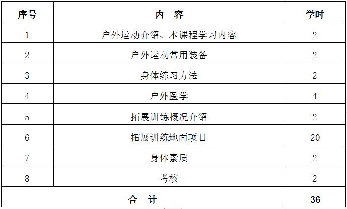

课程管理
|
课程名称 |
公共体育--户外运动与拓展训练（Ⅰ） |
课程代码 |
TX031118 |
|
课程类型 |
√通识课 □学科（专业）基础课 □专业发展课 |
课程性质 |
√必修课 □选修课 |
|
开课单位 |
体育学院 |
适用专业 |
非体育专业 |
|
总学时数 |
36 |
周学时数 |
2 |
|
课程学分 |
1 |
编 写 人 |
牛伟忠 |
|
编写时间 |
2017.07.20 |
审 批 人 |
刘其龙 |
一、教学目的
教育部颁布的《全国普通高等学校体育课程教学指导纲要》提出高校体育课程“培养学生能参加有挑战性的野外活动和运动竞赛”的运动技能目标。在高校体育课程建设与课程资源开发中， 明确提出开发自然资源，拓展体育教学领域模式。
户外运动与拓展训练是当今社会最热门的运动项目之一，通过两个学期的学习，以培养学生参与户外运动及拓展训练所具有的身体素质、心理品质和适应能力为目的，使学生掌握参加户 外运动与拓展训练的基本知识、技能、技术，形成良好的行为习惯及健康、成熟的心理品质。
二、重点与难点
（一）重点：野外生存高空项目综合知识的熟练运用。
（二）难点：拓展训练的体验与安全控制。
三、基本内容与要求
第1章 户外运动装备、身体训练及野外伤病的处理
1.1户外运动的概念、特点与作用；起源与发展简况
1.2户外运动的装备及作用
1.3身体训练内容、方法、制定训练计划
1.4野外伤病防治、运动损伤原因及判断、处理、户外常见咬伤及蜇伤的防治、户外饮食及卫生
（一）教学目的：通过户外运动概论的学习，使学生了解户外运动的起源、发展，课程特点和目的、意义，激发学习兴趣。
（二）重点与难点：通过讲解课程内容，使学生了解户外运动尤其野外生存的基本方法及运动伤病的预防及救治等。
（三）基本内容：户外运动的概念、特点与作用、起源与发展简况；户外运动的装备及作用；身体训练内容、方法、制定训练计划； 野外伤病防治、运动损伤原因及判断、处理、户外常见咬伤及蜇伤的防治、户外饮食及卫生。
第2章 户外运动装备的分类及使用方法
2.1户外运动的概念、“户外运动”起源、发展、特点
2.2课程学习内容起源与发展简况基本方针
2.3户外运动常用装备
2.3.1个人装备及使用
2.3.2 集体装备及使用
2.3.3 技术装备及使用
（一）教学目的：介绍户外运动所必需的装备，使学生了解装备的分类、功能及其操作方法，学会选择装备的挑选方法等。
（二）重点与难点：户外运动的装备及作用；。
（三）基本内容：户外运动的概念、起源、发展、特点；课程学习内容起源与发展简况基本方针； 户外运动个人装备、集体装备、技术装备及使用。
第3章 身体练习的基本内容及训练方法
3.1身体训练的必要性
3.2身体训练的基本方法
3.3身体训练内容、方法
3.4制定训练计划
（一）教学目的：通过身体素质练习方法论的学习，使学生充分认识良好的身体素质是进行户外运动的先决条件；掌握身体素质练习方法；学会编制锻炼计。
（二）重点与难点：身体训练内容、方法、制定训练计划。
（三）基本内容：身体训练的必要性、基本方法、内容及方法；训练计划的制定。
第4章 户外医疗诀窍
4.1户外急救的方法
4.2骨折固定与搬运
4.3户外常见疾病防治
4.4高山病防治
4.5户外运动常备药品及用法
（一）教学目的：通过户外医学的学习，使学生掌握常见的运动创伤处置方法，增强自我保护的意识、知识及能力
（二）重点与难点：野外伤病防治、运动损伤原因及判断、处理、户外常见咬伤及蜇伤的防治、户外饮食及卫生。
（三）基本内容：户外急救的方法；骨折固定与搬运；户外常见疾病防治；高山病防治；户外运动常备药品及用法。
第5章 拓展训练的概述及训练的流程、项目
5.1拓展训练的起源、创建与发展
5.2拓展训练的功能、流程
5.3拓展训练地面项目：蜘蛛网 孤岛求生 盲人方阵 艰难使命 雷阵 飞越急流 七巧板 击鼓颠球 搭书架 有轨电车 牵手结 能量传递 摸石过河 无敌风火轮
（一）教学目的：通过学习，使学生熟悉和掌握拓展训练的基础知识、基本动作和基本技法。较熟练地掌握大纲所规定的拓展训练内容。通过学习，使学生了解拓展训练的概述，拓展训练的发展以及课程的模式等。通过实践课的学习，使学生熟练掌握拓展训练地面项目的训练方法， 以及在拓展训练中的保护方法，增强了学生的个人能力，团队协作精神，同时也增强了安全意识。
（二）重点与难点：课程的布课、流程的组织及设计等；
（三）基本内容：拓展训练的起源、创建与发展；拓展训练的功能、流程；拓展训练地面项目。
第6章 身体素质——中长跑
6.1 起跑和起跑后的加速
6.2 途中跑、终点跑
6.3 中长跑的呼吸
6.4 全程跑：1000米（男生）、800米（女生）
（一）教学目的：通过教学使学生掌握起跑和起跑后的加速、途中跑、终点跑等中长跑的基本技术，学会正确的呼吸方式，发展耐力素质，进一步增强心肺功能。
（二）重点与难点：途中跑技术；中长跑的呼吸。
（三）基本内容：起跑和起跑后的加速、途中跑、终点跑等基本技术；全程跑。
四、授课内容学时分配
五、成绩考核：
（一）考核方式：
总成绩＝平时成绩×30%＋课程布置任务完成成绩×70%。平时成绩=户外运动与拓展训练自学操作能力×60%+平时作业×20%+课堂表现×20%， 课程布置任务完成成绩=户外运动随机项目完成度×70%+身体素质成绩×30%。
（二）考核标准
1.平时成绩：平时作业有一次完不成扣除平时成绩的20%，迟到一次扣除平时成绩的10%。
2.课程布置任务完成成绩：在每次课会布置团队要完成的任务及挑战项目，按照团队完成度给予考试成绩，最终成绩为本学期每次课程完成度的相加后算考核成绩，如一次课团队完成了本次课的60分，就在本团队的考核成绩单上标注为60，本学期共有16次课总分为1600分， 本队期末共完成1200分，就将1200折算后乘以0.7加上平时成绩，最终得出学期的考核成绩。
3.身体素质（男子1000米）：评分标准见表1。
六、教材与参考书目
（一）使用教材：
[1]钱永健著，拓展训练（第1版），企业管理出版社，2012年2月
[2]杨汉著.山地户外运动（第1版），中国地质大学出版社，2006年10月
（二）参考书目：
[1]王文生编，户外运动（第1版），高等教育出版社，2014年1月
[2]晓威著，定向越野（第1版），星球地图出版社，2013年1月
[3]立新著，拓展训练：学校体验式教学（第1版），群众出版社，2014年6月
表1 身体素质考核评分标准

注：数据来源于国家学生体质健康标准（2014年修订）。